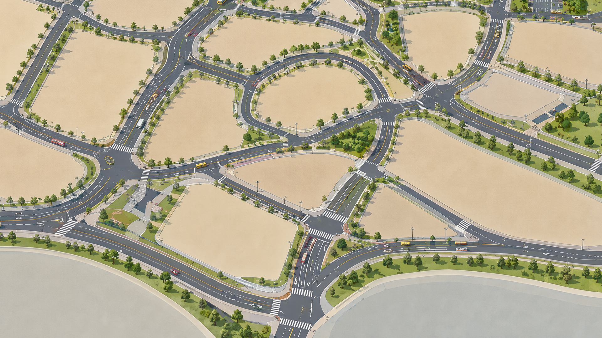
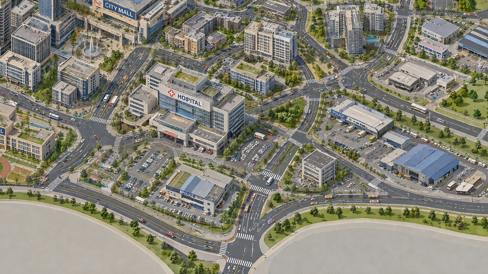

自然环境、交通基础设施、城市形态、活动分布与城市设计元素。
CITYVIBE / URBAN ENSEMBLE / 01
如果把城市
如果把城市
变成声音，
它会是
什么样子？
我的专业是测绘工程，长期关注城市空间；我也一直喜欢声音。于是我开始思考：如果把城市中的功能、流动和空间关系转译成声音，一座城市会呈现怎样的听觉肖像？
这不是给地图配一段背景音乐，而是尝试把城市数据按规则转译成一套可以被听见的空间关系。URBAN DATA / SPATIAL RULES / AUDITORY PORTRAITRESEARCH THREAD / Adhitya · Sonifying Urban Rhythms · Urban Orchestra
POI城市功能分布
OD空间移动关系
HILBERT连续遍历路径
CITYVIBE / IMAGE STUDYCITY OVERLAY


ROAD + CITY / IMAGE PROTOTYPE1920 × 1080ROAD MASK / VISUAL TEST
ROAD MASK / IMAGE PROTOTYPE
先把城市拆开，
再让它拥有自己的声部。我借鉴 Adhitya 关于 Urban Orchestra 的分层方法：先区分城市系统，再把具体元素转译成不同的听觉标识和声音参数。
用不同的音色区分不同系统，让多个城市系统共同形成一支管弦乐队。
有真实声音的元素使用听觉图标；没有直接声音的元素建立象征或物理特征的声音标识。
继续处理音高、响度、时值与音色，让城市元素能够进入声音事件。
研究脉络：城市系统 → 管弦声部 → 具体元素 → 声音参数。我借鉴这套分层结构，但重新组织自己的数据和空间遍历方式。
从城市数据，
走到一条可听见的路径。POI 负责描述城市功能，OD 流补充城市中的移动关系，希尔伯特曲线则把二维空间转成连续的遍历序列。
学校、医院、商业等 POI 让空间单元拥有可以被解释的语义。
OD 数据补充起点与终点之间的移动，让城市不只是静态地图。
希尔伯特曲线将二维城市转换为连续序列，减少遍历过程中的空间跳跃。
空间单元沿路径被读取，并根据映射关系触发声音事件，最终生成 MIDI。
目前项目仍处于 Demo 阶段。映射关系和时序关系已经完成建模，也已经生成 MIDI 文件；但 MIDI 转换为真实音色时效果还不够理想，因此当前页面保留为研究与视觉实验。